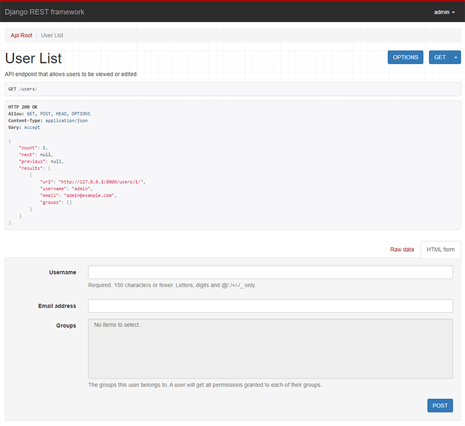

Quickstart
관리자 사용자가 시스템 내의 사용자와 그룹을 조회하고 수정할 수 있도록 하는 간단한 API를 만들어 보겠습니다.
Project setup
tutorial이라는 이름의 새로운 Django 프로젝트를 생성한 뒤, quickstart라는 앱을 하나 추가합니다.
# Create the project directory
mkdir tutorial
cd tutorial
# Create a virtual environment to isolate our package dependencies locally
python3 -m venv env
source env/bin/activate # On Windows use `env\Scripts\activate`
# Install Django and Django REST framework into the virtual environment
pip install djangorestframework
# Set up a new project with a single application
django-admin startproject tutorial . # Note the trailing '.' character
cd tutorial
django-admin startapp quickstart
cd ..
프로젝트 구조는 다음과 같아야 합니다.
$ pwd
<some path>/tutorial
$ find .
.
./tutorial
./tutorial/asgi.py
./tutorial/__init__.py
./tutorial/quickstart
./tutorial/quickstart/migrations
./tutorial/quickstart/migrations/__init__.py
./tutorial/quickstart/models.py
./tutorial/quickstart/__init__.py
./tutorial/quickstart/apps.py
./tutorial/quickstart/admin.py
./tutorial/quickstart/tests.py
./tutorial/quickstart/views.py
./tutorial/settings.py
./tutorial/urls.py
./tutorial/wsgi.py
./env
./env/...
./manage.py
애플리케이션이 프로젝트 디렉터리 내부에 생성된 점이 다소 낯설게 보일 수 있습니다.
하지만 프로젝트의 네임스페이스를 사용하면 외부 모듈과의 이름 충돌을 방지할 수 있습니다(이 내용은 quickstart 범위를 벗어나므로 여기서는 자세히 다루지 않습니다).
이제 데이터베이스를 처음으로 동기화합니다.
python manage.py migrate
다음으로 admin이라는 초기 사용자를 하나 생성하고 비밀번호를 설정합니다.
이후 예제에서 이 사용자로 인증을 수행하게 됩니다.
python manage.py createsuperuser --username admin --email admin@example.com
데이터베이스 설정과 초기 사용자 생성이 완료되면, 이제 앱 디렉터리를 열고 본격적으로 코딩을 시작합니다.
Serializers
먼저 serializer를 정의합니다.
데이터 표현을 담당할 tutorial/quickstart/serializers.py 모듈을 새로 생성합니다.
from django.contrib.auth.models import Group, User
from rest_framework import serializers
class UserSerializer(serializers.HyperlinkedModelSerializer):
class Meta:
model = User
fields = ["url", "username", "email", "groups"]
class GroupSerializer(serializers.HyperlinkedModelSerializer):
class Meta:
model = Group
fields = ["url", "name"]
여기서는 HyperlinkedModelSerializer를 사용해 하이퍼링크 기반의 관계를 표현하고 있습니다.
기본 키 기반 관계 등 다른 방식도 사용할 수 있지만, 하이퍼링크는 RESTful 설계 관점에서 좋은 선택입니다.
Views
이제 view를 작성할 차례입니다.
tutorial/quickstart/views.py 파일을 열고 아래 코드를 작성합니다.
from django.contrib.auth.models import Group, User
from rest_framework import permissions, viewsets
from tutorial.quickstart.serializers import GroupSerializer, UserSerializer
class UserViewSet(viewsets.ModelViewSet):
"""
API endpoint that allows users to be viewed or edited.
"""
queryset = User.objects.all().order_by("-date_joined")
serializer_class = UserSerializer
permission_classes = [permissions.IsAuthenticated]
class GroupViewSet(viewsets.ModelViewSet):
"""
API endpoint that allows groups to be viewed or edited.
"""
queryset = Group.objects.all().order_by("name")
serializer_class = GroupSerializer
permission_classes = [permissions.IsAuthenticated]
여러 개의 view를 각각 작성하는 대신, 공통 동작을 ViewSet이라는 클래스로 묶었습니다.
필요하다면 언제든 개별 view로 분리할 수 있지만, viewset을 사용하면 코드가 간결해지고 구조도 깔끔해집니다.
URLs
이제 API URL을 연결합니다.
tutorial/urls.py 파일을 수정합니다.
from django.urls import include, path
from rest_framework import routers
from tutorial.quickstart import views
router = routers.DefaultRouter()
router.register(r"users", views.UserViewSet)
router.register(r"groups", views.GroupViewSet)
# Wire up our API using automatic URL routing.
# Additionally, we include login URLs for the browsable API.
urlpatterns = [
path("", include(router.urls)),
path("api-auth/", include("rest_framework.urls", namespace="rest_framework")),
]
view 대신 viewset을 사용하고 있기 때문에, router에 viewset을 등록하는 것만으로 API의 URL 설정을 자동으로 생성할 수 있습니다.
더 세밀한 URL 제어가 필요하다면, 일반 클래스 기반 view를 사용해 URL 설정을 직접 작성할 수도 있습니다.
마지막으로, browsable API에서 사용할 로그인/로그아웃 URL을 포함했습니다.
이는 선택 사항이지만, 인증이 필요한 API를 브라우저에서 테스트할 때 매우 유용합니다.
Pagination
페이지네이션을 사용하면 한 페이지에 반환되는 객체 수를 제어할 수 있습니다.
이를 활성화하려면 tutorial/settings.py에 다음 설정을 추가합니다.
REST_FRAMEWORK = {
"DEFAULT_PAGINATION_CLASS": "rest_framework.pagination.PageNumberPagination",
"PAGE_SIZE": 10,
}
Settings
INSTALLED_APPS에 'rest_framework'를 추가합니다.
설정 파일은 tutorial/settings.py에 있습니다.
INSTALLED_APPS = [
...
'rest_framework',
]
이제 설정은 모두 완료되었습니다.
Testing our API
이제 우리가 만든 API를 테스트할 준비가 되었습니다.
명령줄에서 서버를 실행합니다.
python manage.py runserver
이제 curl 같은 커맨드라인 도구를 사용해 API에 접근할 수 있습니다.
bash: curl -u admin -H 'Accept: application/json; indent=4' http://127.0.0.1:8000/users/
Enter host password for user 'admin':
{
"count": 1,
"next": null,
"previous": null,
"results": [
{
"url": "http://127.0.0.1:8000/users/1/",
"username": "admin",
"email": "admin@example.com",
"groups": []
}
]
}
또는 커맨드라인 도구인 httpie를 사용할 수도 있습니다.
bash: http -a admin http://127.0.0.1:8000/users/
http: password for admin@127.0.0.1:8000::
$HTTP/1.1 200 OK
...
{
"count": 1,
"next": null,
"previous": null,
"results": [
{
"email": "admin@example.com",
"groups": [],
"url": "http://127.0.0.1:8000/users/1/",
"username": "admin"
}
]
}
또는 브라우저에서 직접 http://127.0.0.1:8000/users/ 주소로 접근할 수도 있습니다.

브라우저로 접근하는 경우, 우측 상단의 컨트롤을 사용해 로그인해야 합니다.
아주 간단하죠!
REST framework의 구조를 더 깊이 이해하고 싶다면 the tutorial을 계속 진행하거나, API guide를 살펴보시기 바랍니다.